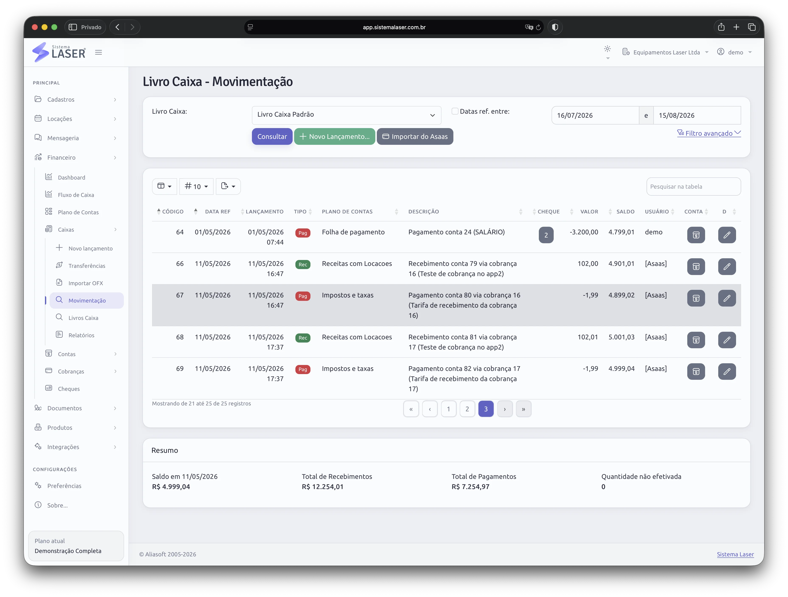

Consulta antes da promessa
A equipe confirma disponibilidade antes de fechar a locação.
Locadora não precisa apenas emitir nota ou controlar caixa. Precisa saber se o equipamento está disponível, onde está, quando volta, qual contrato está vigente e como a cobrança será acompanhada.
ERPs genéricos costumam ser fortes em financeiro e emissão de documentos, mas a locação tem perguntas próprias: qual ativo está livre, qual cliente reservou, quem retirou, qual protocolo foi assinado, que foto comprova a entrega e qual manutenção está pendente.
O Sistema Laser organiza essas respostas dentro de uma plataforma online. A locação deixa de ser um lançamento isolado e vira um processo rastreável.

A equipe confirma disponibilidade antes de fechar a locação.
Documentos, fotos, protocolos e status no mesmo histórico.
Cobranças e custos conectados à locação correta.
Dashboards e relatórios mostram ocupação e resultado.